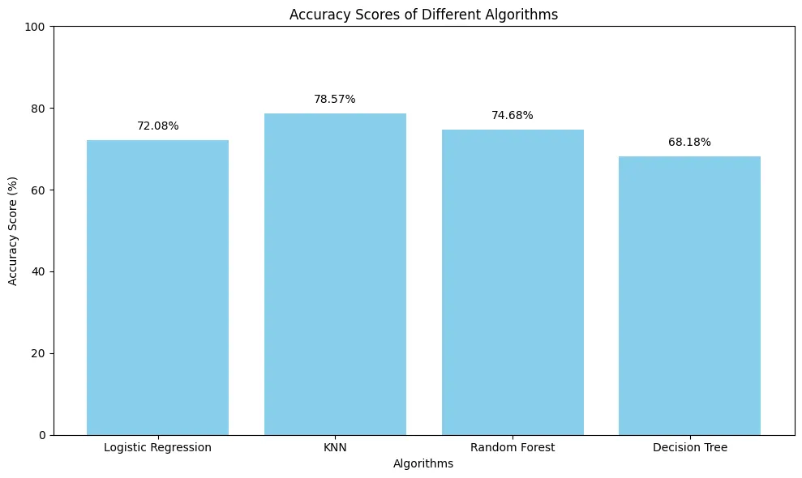
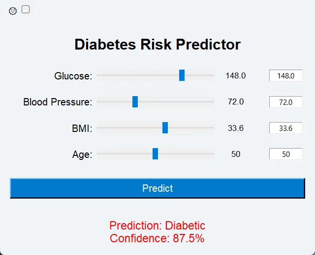
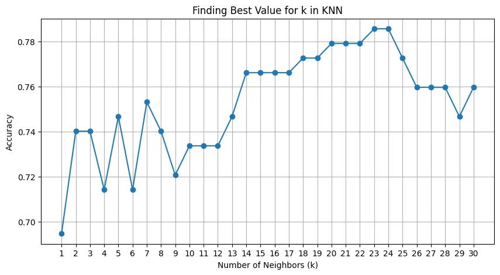
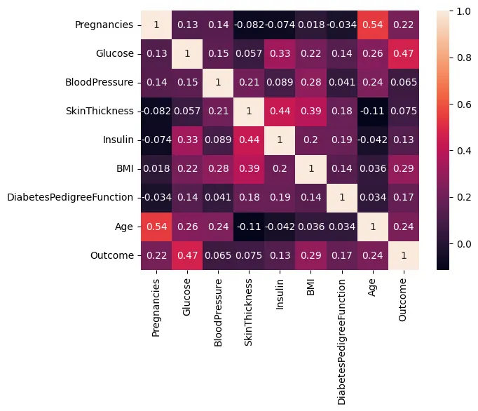
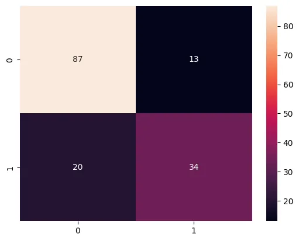
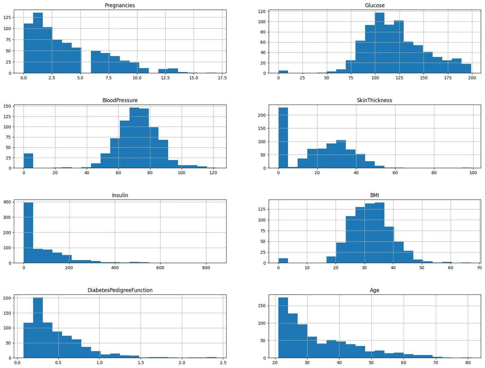

← Archive
Diabetes Risk Predictor
Compared eight machine-learning models on the Pima diabetes data, then deployed the winner in a Streamlit web app and a desktop app.

Overview
I explored the 768-record Pima dataset (distributions, correlations, class balance), then trained and compared logistic regression, KNN, four SVM kernels, a random forest and a decision tree on the same split.
KNN with k = 23 scored best. I deployed it in a Streamlit web app and in a Tkinter desktop app packaged as a Windows executable.
What I did
- 01Did the exploratory analysis and feature correlation.
- 02Swept k from 1 to 30 to tune KNN.
- 03Benchmarked eight models on accuracy, precision, recall and F1.
- 04Built the Streamlit web app and the slider-based desktop app with a confidence readout.
Signal path
- Pima dataset
- EDA
- 8 models
- KNN, k = 23
- Streamlit & desktop app
Gallery · 5 images
A closer look




